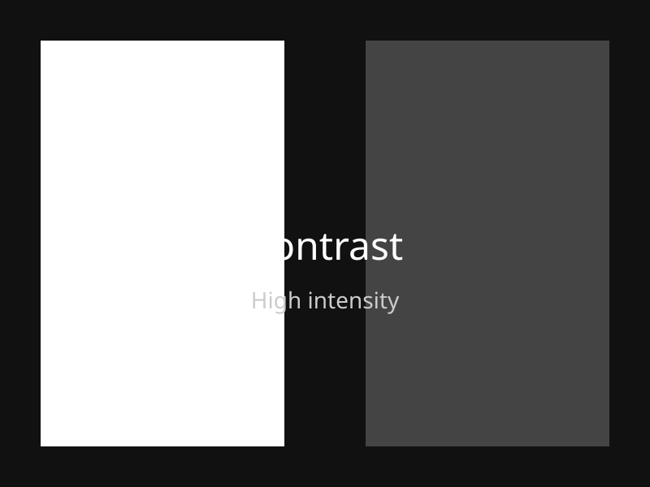
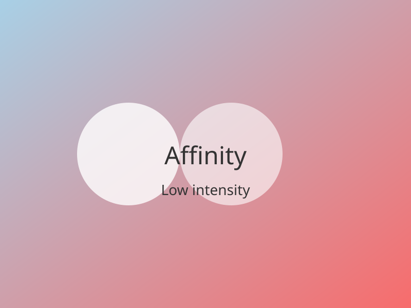
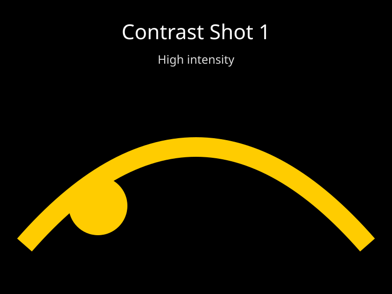
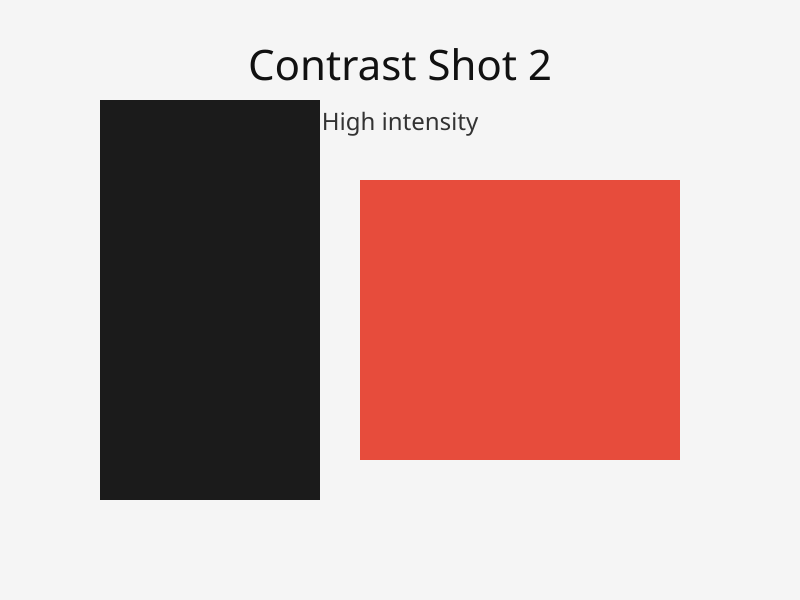
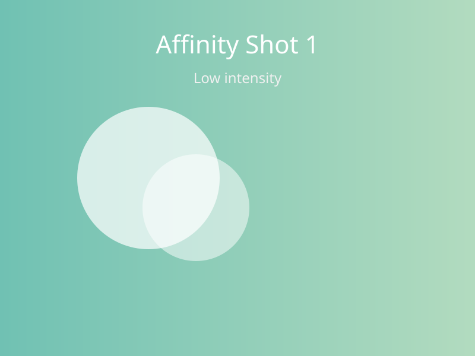
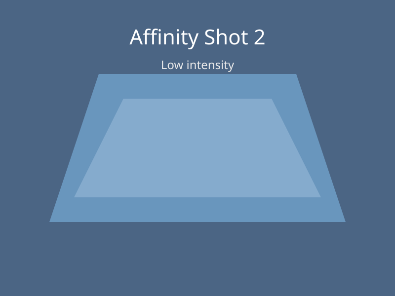

Response 2: Bruce Block, Chapter 2, Contrast and Affinity (Capture & Share)
1. Contrast within the shot
High visual intensity

2. Affinity within the shot
Low visual intensity

3. Contrast from shot to shot
High visual intensity


4. Affinity from shot to shot
Low visual intensity


Reflection
I learned that contrast and affinity are visual tools that shape how an image feels and how viewers move through the frame. Contrast within a shot is created by strong differences in tone, shape, or color, and it gives a scene energy and focus. Affinity within a shot is created by similarity and repetition, which calms the image and makes it feel unified. When I compare shot-to-shot relationships, contrast creates a sharp visual jump that catches attention, while affinity creates continuity and a sense of flow. The components interact by balancing intensity: a single high-contrast shot can feel dramatic, whereas affinity helps a sequence feel cohesive. Overall, the exercise showed me that visual intensity depends on both the internal relationships inside each shot and the way successive shots relate to one another.